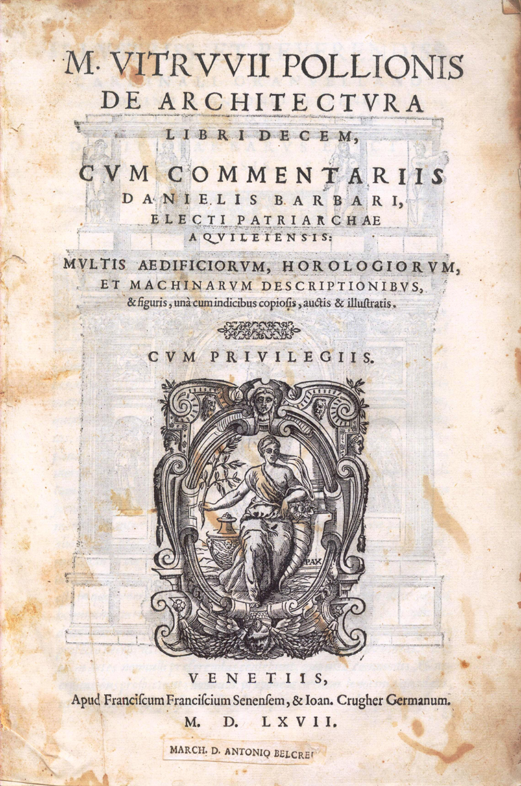
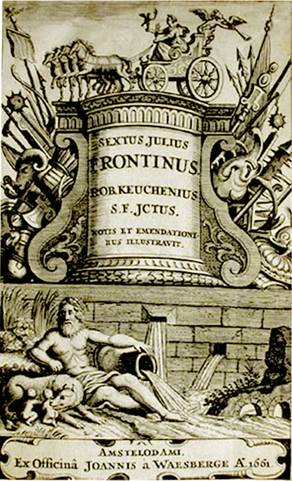

Gli acquedotti
emblema della romanità

La costruzione e gestione degli acquedotti nel mondo romano attraverso i trattati di Vitruvio e Frontino
Le fonti letterarie di epoca romana offrono moltissimi riferimenti occasionali al tema idrico, ma pochissime sono le trattazioni sistematiche, tra cui assumono un ruolo di primo piano nello studio degli acquedotti i trattati di Vitruvio e Frontino.
Nell'VIII libro del De Architectura, Vitruvio illustra le strutture legate al trasporto idrico con l'obbiettivo di spiegare i sistemi di individuazione delle sorgenti d’acqua, l’analisi delle sue proprietà a seconda delle caratteristiche dei luoghi e le tecniche di adduzione.
Ma è Frontino, con il De aquaeductu urbis Romae, che costituisce la fonte di informazioni più preziosa per lo studio degli acquedotti romani.
In questo trattato convergono, oltre ad informazioni di carattere storico-economico e di carattere giuridico, indicazioni utili per comprendere la costruzione e la gestione pratica degli acquedotti nel mondo romano.
Biografie
Marco Vitruvio Pollione
Marco Vitruvio Pollione nasce circa nell'80 avanti Cristo, in un luogo geografico che non è mai stato identificato. Anche sulla sua vita si hanno poche notizie certe.
Si ipotizza che egli sia stato ufficiale sovrintendente alle macchine da guerra con Giulio Cesare e che sotto Augusto sia diventato architetto e ingegnere anche se la sua attività è stata più teorica che pratica, nel senso che la sola opera che ha progettato e costruito, o che, comunque, egli stesso si è attribuito, è la basilica di Fano.
Andato in pensione, Vitruvio si dedica alla stesura del De architectura, articolato in dieci libri e scritto con tutta probabilità nel giro di sei anni tra il 29 e il 23 a.C.
L'importanza di questa opera va individuata nel fatto che si tratta dell'unico trattato di architettura giunto a noi integralmente dal mondo romano e questa unicità è il motivo dell'influenza che ha esercitato, e che esercita ancora oggi, sulla cultura occidentale.
Marco Vitruvio Pollione muore nel 15 avanti Cristo circa, presumibilmente a Roma, ma anche in questo caso non si hanno dettagli precisi in proposito.
Giulio Sesto Frontino
Frontino nasce il 40 d.C. nella Gallia Narbonense. La sua carriera politica è quella tipica di un esponente dell'oligarchia senatoria.
È certo che fu praetor urbanus nel 70, consul suffectus nel 73, governatore in Britannia tra il 74 e il 78, curator aquarum, cioè sovrintendente agli acquedotti di Roma, nel 97 e di nuovo consul suffectus nel 98 e ordinarius nel 100.
Nel corso dei suoi incarichi pubblici scrive diversi trattati, tutti di natura tecnica, composti, come egli ci dice, in parte per la sua istruzione, e in parte per il vantaggio degli altri.
L'opera più importante è il De aquaeductu urbis Romae in cui tratta la storia e la descrizione del rifornimento idrico di Roma, incluse le leggi relative al suo uso e alla manutenzione degli acquedotti della capitale.
Il manoscritto di quest'opera di Frontino fu rinvenuto da Poggio Bracciolini nella biblioteca di Montecassino nel 1425.
Frontino scrive anche un libro sugli stratagemmi militari, caso unico nella letteratura latina, in cui narra di exempla di stratagemmi riusciti, illustrando anche le regole della scienza militare.
Tra le sue opere andate perdute, infine, c'è un trattato di agrimensura, la disciplina che ha per oggetto la rilevazione, la rappresentazione cartografica e la determinazione della superficie agraria di un terreno.
Frontino muore tra il 103 e il 104, durante il principato di Traiano. Plinio il Giovane riferì che egli aveva desiderato che non gli fosse dedicato alcun monumento, quale «inutile spesa, poiché soltanto ai nostri meriti è affidata la nostra memoria».
Istruzioni per l'uso
Realtà virtuale e aumentata
Su desktop puoi spostare e zoomare il modello attraverso il mouse o i comandi da tastiera. Attivando interruttori in basso a sinistra verranno mostrati gli hotspot presenti sul modello. Cliccando sulle etichette verranno visualizzare le informazioni relative.
Se stai visualizzando l'oggetto 3d su smartphone/tablet in VR puoi spostarlo muovendo due dita sullo schermo, per zoomarlo allontana o avvina due dita toccando lo schermo, per ruotarlo muovi in senso circolare due dita sullo schermo. Attivando interruttori in basso a sinistra verranno mostrati gli hotspot presenti sul modello Attivando interruttori in basso a sinistra verranno mostrati gli hotspot presenti sul modello. Cliccando sulle etichette con un dito verranno visualizzate le informazioni relative.

Clicca sul bottone “Mostra nella spazio” per accedere alla visualizzazione in realta' aumentata.
Attivata la fotocamera traccia il piano puntando il telefono verso il basso. Il posizionamento dell'oggetto dipenderà dall'angolo del telefono al momento del rilevamento del piano.

N.B. Se il tuo dispositivo non e' predisposto per la realta' aumentata il bottone “Mostra nello spazio” non comparirà.
Per i sistemi Android il punto di ancoraggio e' sul bordo del parallelepipedo che contiene il modello, mentre per sistemi IOS il punto di ancoraggio coincide con l'origine del modello 3d.